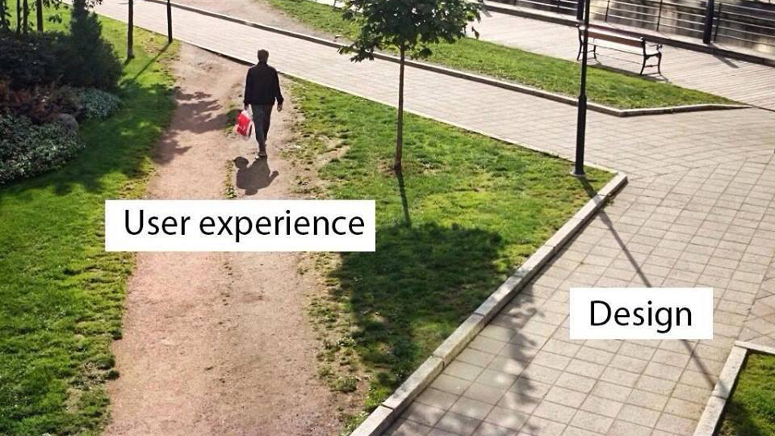

Advanced UX
I work in the design studio at Mercedes-Benz R&D North America. We focus on innovations such as fuelcell, self-driving, 3d graphics, and advanced design.
My focus within the studio covers speech interaction and natural language processing. Of course I'm under a NDA, so I can't share with you the actual work, so instead I'll highlight the process and problems surrounding my AI project.
Designing intelligence
Most people I've talked to are not sold on the value of siri, alexa, and similar natural language voice interfaces. Some interfaces may disappoint users by sounding smarter than they really are, but what people really mean to say is that the voice interface isn't smart enough.
At first, that may seem like an easy problem to grasp. Smart design means putting the user first, meaning.. (1) start with a need (2) design an intuitive layout, (3) provide interactive content, (4) optimize by testing
Unfortunately, this isn't the case. When designing for intelligence, simple is not better. The goal is to make the interface replicate the thought process of a human - not a puppet you can pinch and drag like clickbait. Part of the "magic" is delightfully surprising the user. The point is to avoid explicit visuals and overt commands. I'm really excited about this shift because it's a chance for us ourselves to become smarter and more human because of the technology we interact with.
Natural language processing
So how do you replicate the intelligence of a human? In my case, it's through a voice agent. So I've been working on how the agent understands what you're saying as well as how it should talk back. Here are a few problems I've spent my time solving:
-
How do you dynamically create and update non-verbal context in voice interaction?
Teaching an agent to extract a combination of names, titles, and descriptions referenced in a single utterance
Taking an indirect reference made by the user and assigning it to an object with the help of prepositions
Sometimes it's still better to show then tell, so how do you anthropomorphize a GUI without being creepy?
Moving fast means cutting corners
If there were such a thing as a linguistic rulebook, it wouldn't be worth teaching to my agent. On one hand, I had to find (scalable) ways to map out, compromise, then phrase these linguistic rules into functional statements. On the other hand, users don't always follow all of these grammatical rules to begin with. So generally speaking, my solution combined outlining basic linguistic conventions with training through user input. Because my focus was designing interactions, it didn't make sense to feed the machine large amounts of data for marginal improvements and extreme wildcards. For the loose ends, it was more practical to tape it together with scripts.
Language is more inuitive to humans than any app ever designed . So to put myself in the shoes of the user, all I had to do was stop thinking about how computers worked and start talking like I would to a person.. My first example dialogues were me pretending to speak to my mother. Although some designers recommend speaking to the agent like you're asking a stranger a question, my goal was to design a smarter agent; one where you could say less white it understands more - just like your mother. After this initial stage, I broadened my syntax and incrementally made myself harder to understand. At the same time, I started designing and developing the GUI that I eventually hooked up to my voice interface and loaded onto the car's linux machine. The nice thing about cars is that people are in a nice private space that is acoustically absorbent. As you might know, people are more comfortable speaking and singing out loud when in a car.
Relevant design meme

Takeaways
As UX designers, we're practical problem solvers. For us it's more about the functionality; there's no such thing as a proper way. You can't really "fake" a natural language demo, but there are still more and less practical ways of achieving your goal. What I learned in the process was that even though we have these new techniques like deep learning at our hands, the agent/program doesn't have to think the same way a human does in order to present itself like it thinks the same way a human does.
There's nothing wrong with artificial intelligence being artificial. And we ourselves rely on this phenomenon all the time - for instance during interviews, or when someone asks you for advice (kidding). Realizing this was a milestone in my jedi journey as a designer that codes (coding = the dark side).
Related projects
Each year some work from our studio is shown publicly at CES. If you want to get a better idea of how intelligent interaction plays into cars, check out these projects my team has worked on in the past. Just to be clear, I was not involved in either of these past projects.
2015 F 015
2016 concept IAA